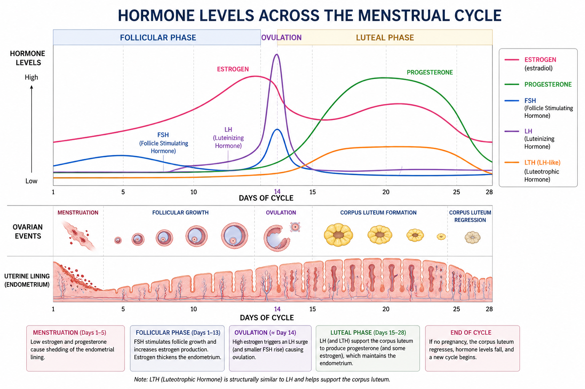
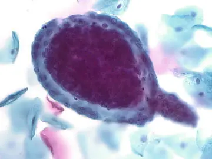
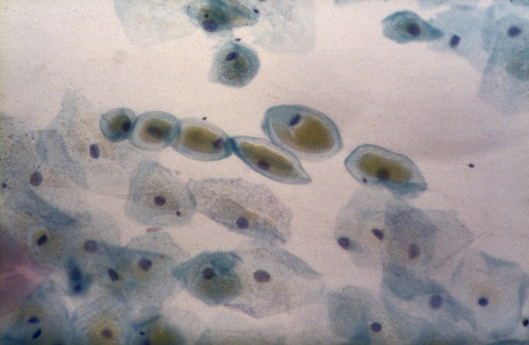
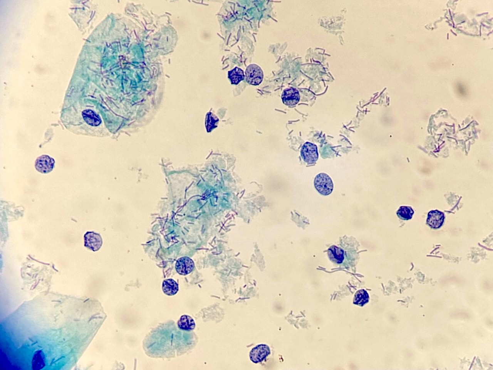
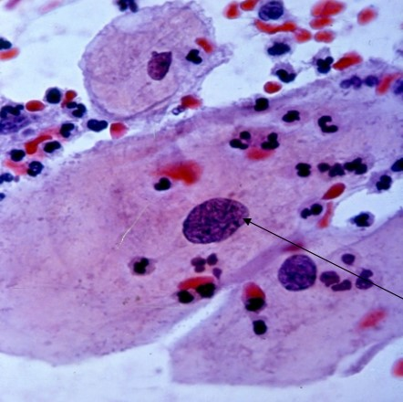
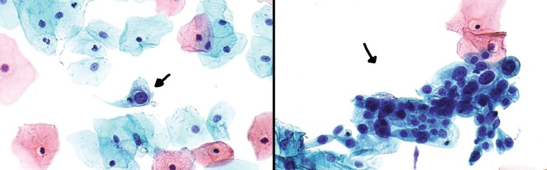
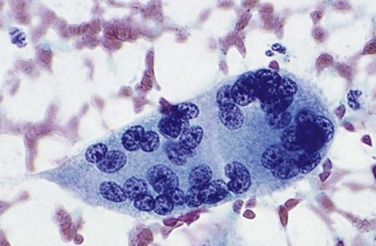
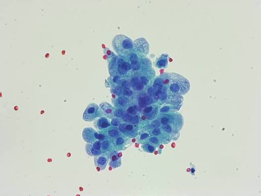
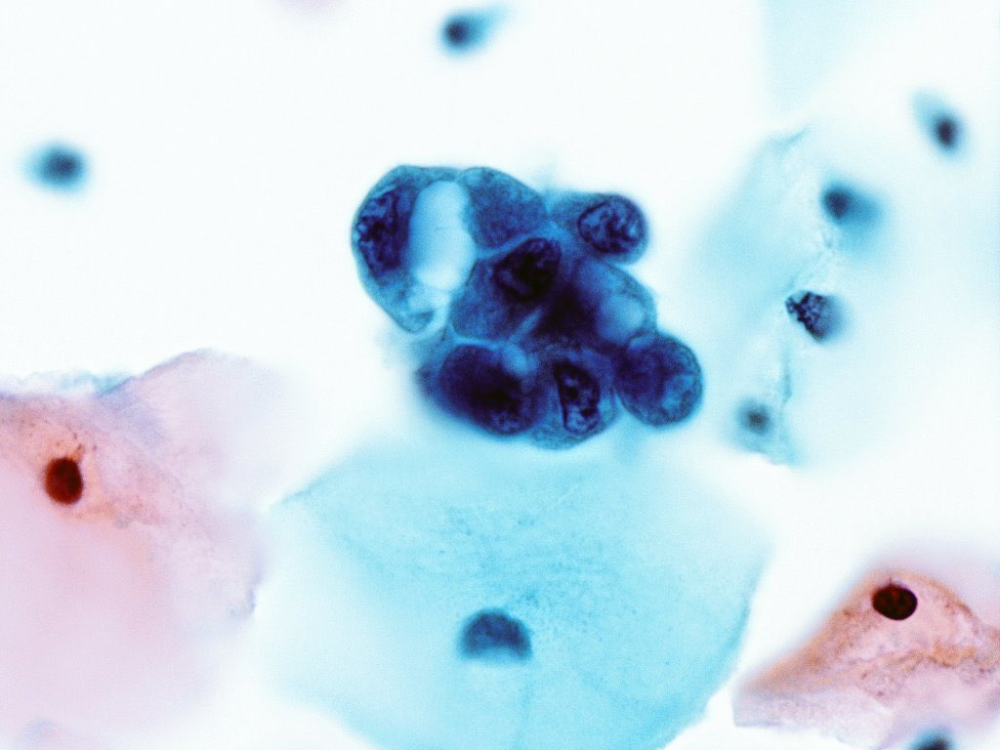
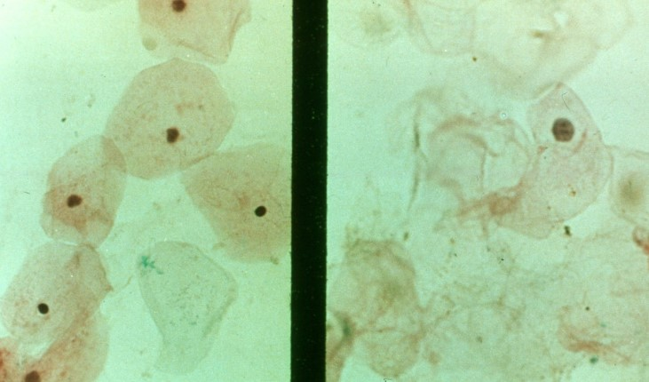

Hormonal Cytology
Normal Hormonal Pattern
Exogenous Hormones, Abnormal Patterns, Pregnancy
Normal Hormonal Pattern
- Squamous mucosa very sensitive to both estrogen and progesterone
- Upper "proximal" portion of vaginal wall most sensitive
- Also sensitive to- Vitamin A (retinoid), androgens, corticoids, thyroxin, vitaminds, antibiotics, digitalis, mechanical simulation and inflammation
- Ectocervix has different response due to inflammation and changes at T-zone
- For hormonal analysis: Vaginal wall gently scraped to obtain exfoliated cells only
- Ideally samples collected daily over one month
- Evaluated by a single tech
Physiology
- At puberty, the hypothalamus and anterior pituitary gland produce gonadotrophic hormones
- There hormones stimulate the ovaries
- Ovaries in turn produce ovum and secrete the hormones estrogen and progesterone
- These hormones control the proliferation of the endometrium and maturation of the vaginal epithelium
- Estrogen stimulates the basal cells to reproduce and cause maturation
- Typically 4-5 days from signal to the basal cells and maturation at the surface
- Estrogen and progesterone are steroid hormones produced in gonads and adrenal glands
- Proteohormones are produced in anterior pituitary gland
- Controls growth of ovarian graafian follicles, becomes the corpus luteum which produces progesterone
- These are FSH, LH, LTH:
- FSH- Follicle stimulating hormone
- LH- Lutenizing hormone
- LTH-Luteotrophic hormone
- All of these hormones control the female reproductive cycle
Mentrual Cycle
- Squamous mucosa under control of estrogen in first half of cycle
- Basal cells contain estrogen receptor, lose receptors as cells mature
- Endocervical cells contain estrogen receptors
- Produces mucus to facilitate the transportation of sperm
- Progesterone inhibits estrogen effect
- Progesterone produces loss of squamous maturation
- Cycle is measured in 28 days
- Day one of the cycle is the first day of menstruation
- Day 1-6 is the Menstrual phase
- Day 6-13 is the Proliferative phase
- Day 14 is Ovulation
- Day 15-28 is the Secretory or luteal phase
- 15-21 = early secretory
- 21-28 = late secretory
Hormone Timeline
- Days 1-10: FSH is released from the anterior pituitary gland
- Causes primordial follicle in the ovary to increase in size
- The follicle begins to produce estrogen in increasing amounts
- Causes the endometrium to proliferate, becoming thick and vascularized
- Vaginal mucosa begins to mature
- Days 10-14: LH is released from the anterior pituitary gland
- Causes ovum to mature and rupture (ovulation), typically on day 14
- Estrogen production is at its peak on day 14
- LH continues to act on ruptured follicle and causes the development of the corpus luteum
- Endometrium has proliferated and vaginal mucosa is mature (or "ripe")
- Days 15-28: Anterior pituitary gland produces LTH
- LTH maintains corpus luteum and stimulates it to begin secreting progesterone
- Progesterone (meas "carry gestation") is produced in increasing amounts
- Endometrium now becomes secretory as it prepares for possible fertilization
- Vaginal mucosa begings to lose maturity with lack of estrogen
- The high levels of progesterone inhibits further production of LH and LTH
- If there is no implantation, corpus luteum dies
- Progesterone production diminishes and sloughing off of the endometrium (menstruation) will occur
- Cycle begins again with production of FSH
- If implantation occurs, copus luteum will continue to produce progesterone
- Maintains the fetus until placental development and maturity (third month)
- Proteohormones and sex hormones produced until delivery
- Drop in both estrogen and progesterone after delivery
- Ovary not function = no progesterone
- Placental removal stops progesterone production
- Hormones influence all the cells in the female genital tract and some in the urinary bladder
- Hormonal evaluation is performed to assess ovarian function in relation to disorders, pregnancy, puberty and menopause
- Hormonal evluation is based on the degree of maturity of squamous cells
- Based on the pattern of the cell sample in regards to the number of superficial, intermediate, and parabasal cells, as well as glycogen production
- A less reliable tool is the appearance of "ferning" mucus produced by endocervical cells
- It is imperative that the date of LMP and age is provided
- Patient's "day of cycle" can be approximated by knowing when was the first day of her last menstrual period and the date the pap smear was collected
- Hormonal evaluation should not be performed if:
- Sample is air-dried, poorly preserved, or obscured
- There is marked inflammation
- There is bacterial content not part of vaginal flora
- Essential patient information such as LMP, age, etc. is omitted
- Hormones control growth, maturation, and desquamation of vaginal cells
- The cells of concern are superficial, intermediate, and parabasal cells
- Superficial cells are the "mature" cells and indicate the presence and effect of estrogen
- Parabasal cells are immature, indicating a lack of estrogen and progesterone effect
- This is called atrophy which results in an "atrophic pattern"
- Pattern is composed predominately of intermediate cells
- This is due to the effect of mother's hormone in infant's circulatory system
- Around 4 weeks, pattern becomes increasingly atrophic as the hormonal levels diminish
- Once the mother's hormones has diminshed, the pattern is composed of parabasal cells (Atrophic pattern)
- The background consists of naked nuclei, mucus, and polymorphonuclear leukocytes
- This pattern remains until puberty where the influence of hormones gradually ripens the epithelium
- Most pap tests come from this age group
- It is important that the LMP and age are provided
- Day 1 begins the menstrual phase of the cycle
- The number of days for when shedding occurs varies from female to female
- Gynecologic examination and cervical vaginal sampling during menstruation is discouraged as the sample is often obscrubed by blood and inflammation
- Intermediate cells predominate and clusters of endometrial cells may be present
- Intermediate cells begin to mature with increase in eosinophilia and pyknotic nuclei
- Endometrial cells will often be observed presenting in a "pattern of exodus"
- This pattern predominates from Day 6-10 and usually signifies the end of the cycle
- The pattern is that of endometrial glandular cells surrounding a core of endometrial stromal cells
- Mucus and inflammatory cells decrease
- Most women will cease shedding by day 10
- This is the recommended time for a women to receive a pap test
- Estrogen effecet is at its highest, resulting in a predominance of superficial cells in a clean background
- Abnormal cells are readily identified in this environment
- Ferning is also appreciated at this time
- Superficial cells decrease, intermedaite cells increase and start clumping together
- Increase in number of Doderlain bacilli, background becomes inflamed, mucoid and granular
- The pattern of cytolysis begins
- Degeneration of intermediate cells due t overgroth of Doderlain bacilli consuming glycogen in cytoplasm, leaving naked nuclei
- Pattern consists of predominately intermediate cells which tend to fold and clump
- Cytolysis and number of Doderlain bacilli increase
- Background becomes "dirty" with naked nuclei and cytplasmic debris
- May be difficult to find intact cells
- This is not considered an unsatisfactory sample
- Focus on naked nuclei, searing for abnormal changes
- The cycle will begin again if pregnancy does not occur
- Menopause begins around late 40s to mid 50s
- Varies with each woman
- It is not instantaneous but a long process
- Ovarian follicles may persist but no ovulation
- As menopause progresses there is a decrease in estrogen and progesteroen production
- Ovulation patterns persist due to androgen conversion to estrone
- Endometrium may go through estrogen "withdrawal"
- Squamous mucosa ripening stops
- In early menopause, an intermediate cell pattern will predominate
- It will eventually shift to intermediate and parabasal cells
- Cells begin to appear washed out and the background increasingly dirty
- Predominately atrophic pattern
- Vaginal mucosa becomes thin
- Cytoplasm of cells may become vacuolated and cells may fuse together to form "giant" parabasal cells
- Some parabasal cells will have orange cytoplasm and pyknotic nuclei
- Background is granular and "dirty"
- Blue blobs representing degenerated cells may be observed
- Sparse endocervical cells (TBS requires no ECC reporting in atrophic pattern)
- Not all women will have this pattern
- Some women, especially those that are obese, diabetic, and hypertensive, may neer develop an atrophic pattern due to production or ingestion of "estrogens"
- Surgical removal/radiation of ovaries causes a similar pattern
- Cytologic indices and hormonal pattern evlauations are used to asses ovarian function
- Cytologic indices are counts of the types of cells obsered in a vaginal smear
- The interpretation of the "count" is left to the discretion of the clinician
- When a clinician wants an Index performed, it must be specifically requested
- Most common index used
- It is based on a count of 100 cells (some sources sauggest 300 cells) and is divided into a three part ratio of the number of each cell type
- Parabasal/Intermediate/Superficial cells = P/I/S
- Shift to the left (100/0/0) is an atrophic pattern
- Shift to the right (0/0/100) is a mature epithelium suggesting estrogen effect
- Shift to the middle (0/100/0) indicates progesterone effect
- Karypyknotic Index (KPI): Percentage of superficial cells with square cytoplasm and pynotic nuclei
- Eosinophilic Index (EI): number of cells with pink eosinophilic cytoplasm
- Folded Cell Index (FCI): number of mature, clustered squamous cells
- Crowded Cell Index (CCI): number of mature, clustered squamous cells
- Maturation Value: a certain cell is given a certain specific value and a total is obtained
- These are hormones given for different clinical reasons or symptoms
- Cellular responses depend on drug, patient's age, and hormonal status
- The effects of these hormones are best observed in atrophic conditions
- Hormone replacement therapy: overall term for exogenous hormones
- Effect depends on balance of estrogen and progesterone
- Given orally or injected causes increase in cellular matruation in all layers of the epithelium
- Estrogen effect is best observed in atrophic patterns
- During pregnancy, application of estrogen has minimal effect
- All subtances containing estrogen, applied or ingested, can cause maturation of the epithelium
- 7-10 days for parabasals cells to mature to superficial cells after estrogen application
- Estrogen vaginal creams applied directly to the vaginal epithelium can cause maturation of the epithelium in three days
- This application of vaginal cream is called the "estrogen proliferation test" and is recommened when abnormal cells are found in atrophic patterns
- Progesterone administration in non-pregnant women produces a predominance of intermediate cells and increased gylcogen production
- Occurs in 4-12 days after administration
- Administration of both estrogen and progesterone increase proliferation in both superficial and intermediate cells
- Androgen administration will generally give an intermedaite cell pattern
- Consist of a steroid which acts as progesterone and inhibits ovulation
- The combination estrogen/progesterone types are most commonly used and administered for 20-22 days
- Cytologic response varies with the type of progesterone used, dosage, and cellular response
- Pattern ranges from full maturity, to intermediate cell pattern as well as some rare parabasal cells
- There may also be increase in inflammatory cells and the fungal organism Candida
- Increased risk of Chlamydia and other infections
- Protrusions of endocervical nuclei with progesterone
- Microglandular hyperplasia caused by progestins
- Pseudo-parakeratosis: degenerated endocervical cells mimicking parakeratosis
- Reactive endocervical cells (Arias-Stella reaction)
- Increase cockleburs and decidual cells
- Increase folic acid deficiency which mimics and increases neoplasia
- Can cause mid-cycle bleeding
- Increase risk of neoplasm in hrHPV positivity
- Suspected increased risk of endocervical adenocarcinoma
- Decreases risk of endometrial and ovarian cancers
- Inhibit pituitary gonadotropin and ovarian hormone production
- Inhibits ovulation
- Thickens mucus barrier to sperm
- Loss of endometrial glycogen, preventing implantation
- Decreases estradiol which increases loss of bone density
- Lowers HDL lipoproteins
- Common types:
- Depomedoxyprogesterone acetate
- Depo-Provera
- Levonorgestrel
- Norplant
- Produces amenorrhea (lack of menses)
- Depo-Provera is a hormone injection that prevents pregnancy for approximately 13 weeks by preventing release of the ovum
- It consists of only progesterone and no estrogen
- Cytologic pattern is that of decreased estrogenic effeect that varies from patient to patient
- Increased glycogenation and navicular cells
- Thins vaginal mucosa
- Pattern ranges from intermediate cells to that of atrophy
- Megace
- Megestrol acetate chemical structure similar to endogenous progesterone
- Treatment for breast and endometrial cancers
- Used as an appetite stimulant
- Intermediate cell pattern
- Arias-Stella-like reactions and decidual cells
- Tamoxifen
- Estrogen recepetor modulator/anti-estrogen drug
- Raloxifene and anastrozole
- Treatment and prevention of breast cancer
- Hormonal drug therapy
- Blocks hormone recepetor sites in breast cancer
- Stops estrogen binding and can stimulate neoplasia, increasing risk for endometrial cancers
- Increases bone density and improves cardiovascular health
- Increases ovarian cysts, endometrial polyps, vaginal adenosis
- Pre-menopausal women atrophy, while post-menopausal women have estrogen effect
- Produces cellular changes which mimic squamous and glandular lesions
- Synthetic estrogen given to pregnant women from 1938 to 1970s
- Supposed to prevent miscarriages and deliver "strong babies"
- Implicated in development of celar cell vaginal cancers in daughters
- Possible prostate and testicular abnormalities in sons
- Birth defects and other problems such as vaginal adenosis linked to DES
- These hormonal patterns are associated with certain genetic and/or physiologic conditions
- Cytology is not used to diagnose these conditions, but we can correlate the cytologic findings with the clinical information
- When menses never occurred
- May be due to ovarian dysfunction, pituitary dysfunction, and congenital abnormality
- These conditions are also described as endocrinopathies
- These are some causes of primary amonorrhea:
- Pituitary dysfunction (neoplasm)
- Adrenal and gonad dysfunction -> atrophic pattern (100/0/0)
- Ovarian dysfunction
- Due to lack of ovaries or neoplasm
- Leads to partial vaginal atrophy (20/80/0)
- Virilizing adrenal hyperplasia
- Overproduction of androgens
- Predominately intermediate cell pattern
- Testicular Feminizing Syndrome
- Phenotypic female, genetic male
- Tissue responds to estrogens
- Intermediate and superficial squamous cell pattern (0/20/80)
- Turner's Syndrome
- Absence/missing X chromosomes
- Vaginal atrophy with no variations (80/10/10)
- Menses ceases after occurring normally for a period of time
- Many causes: endocrine lesions, pituitary disorders, estrogen producing ovarian tumors androgen producing tumors, castration, lactation, eating disorders
- Pregnancy is the most common reason for secondary amenorrhea
- These terms often appear on requisitions and are associated with changes in menses
- Can be caused for various reasons including endometrial hyperplasia, excessive hormones, function tumors
- Metrorrhagia: sloughing off of endometrium between menstrual cycles
- Menorrhagia: excessive bleeding during menses
- Menometrorrhagia: combination of both, heavy bleeding occurring out of cycle
- The normal hormonal cycle ceases during pregnancy
- Placenta produces progesterone to maintain developing fetus
- Pregnancy pattern is mainly intermediate with some parabasal cells
- There may be a pattern with superficial and intermediate cells
- First 3 months: increase in gylcogen production and navicular cells become common
- Three months to delivery: predominance of intermediate cells which clump with granular proteinaceous background consistent with cytolysis
- Observe increase in Doderlain bacilli, Leptothrix and Trichomonas, and especially Candida
- Cells take on a "atypical" appearance
- Increase chromatin clumping, multi-nucleation, and nucleoli become more prominent
- Always take care not to overcall changes associated with pregnancy as pre-cancerous
- Prabasal cells can look larger, air-dried and "washed out"
- Navicular intermediate cells: boat-like shape but does not only indicate pregnancy
- Glycogen stains yellow in central part of cytoplasm with periphery staining basophilic
- Cytoplasm tends to curl up with ecentric nuclei with occassional pyknosis
- Endocervical cells tend to move outwards (ectropion)
- Cells become enlarged and secretory
- Numerous cells with mucus-filled cytoplasm indicate mucus plug
- Most clinicians avoid sampling endocervical canal during pregnancy to avoid distrubing the mucus plug
- Folate and Vitamin B12 deficiency may occur in pregnant patients
- The cytologic changes are similar to those in radiation but less atypical
- Cell exhibit cytomegaly but the N:C ratio remains the same
- Nuclei are generally bland, can be multi-nucleated
- Cervical stromal cells that undergo distinct changes due to the effect of progesterone
- Contain abundant glycogen and glycoproteins
- May be seen with other prolonged progesterone
- Cells are about the size of intermediate cells
- Single or loose clusters with basophilic, semi-transparent cytoplasm
- Large, central nucleus about 3-4 times larger than an intermediate nucleus
- May be multiple
- Finely granular, evenly distributed chromatin
- Small distinct red nucleoli
- These changes mimic dysplasia and reactive changes
- Cytoplasm is vacuolated or fibrillar (fibrils in cytoplasm)
- Mimic moderate dysplasia, repair, and carcinoma
- Cells from the placenta
- Multi-nucleated giant cells
- Rare, may be seen post delivery or abortion
- If seen in first trimester, may indicate threatened abortion
- Large cells, oval to polygonal in shape
- Sharp, smooth cytoplasmic borders
- Distinctive cytoplasmic extension ("tail")
- Abundant dense cytoplasm, cyanophilic, with peripheral heaviness
- With degeneration stains red-orange
- Numerous nuclei (20-200), vary in size, overlap with no molding, round to oval shape, fine to coarse chromatin
- If found 4 weeks postpartum, may indicate retained placenta
- Can indicate malignant conversion to choriocarcinoma
- Occur late in pregnancy, coming from mature placenta
- Single occuring, loose clusters, have basophilic cytoplasm with peri-nuclear heaviness
- Large nuclei, molding, irregular shapes, clumped granular chromatin, fuzzy nuclear membrane with prominent nucleoli
- Features resemble dysplastic and/or reactive changes
- Progesterone effect in both endocervical and endometrial glandular and stromal cells
- Often associated with pregnancy but may also be observed in older women undergoing progesterone therapy
- Cells take on a bizarre appearance, with voluminous pale ("clear") cytoplasm with ill-defined cell borders
- Cells and nuclei enlarge with prominent nucleoli
- Intra-nuclear holes may be observed, and the chromatin is hyperchromatic and fine to granular
- Changes mimic that of adenocarcinoma (particularly clear cell), history and careful examination of nuclear features is important
- Maturation of epithelium progressively increases
- The cell pattern can take on an "atypical" appearance
- Parabasal cells may show cytoplasmic processes
- Reparative changes may be noted in squamous and endocervical cells
- Background consists of polymorphonuclear leukocytes and histiocytes
- If patient is not lactating, normal reproductive pattern returns 10-25 days after delivery
- If patient is breast feeding, ovulation is suppressed
- During lactation, pattern varies from atrophic to intermediate
- Parabasal cells become thicker and may contain glycogen in cytoplasm
- Degenerative changes in intermediate cells may be observed
- After lactation, parabasal pattern begins to diminish
- Threatened abortion or death of a fetus is not determined by the hormonal pattern, it only provides a clude as to what may be occurring clinically
- The normal pattern is predominately intermediate
- A pattern of increased superficial cells may indicate a threatened abortion
- Another clue is the presence of vernix caseosa cells >ul>
- These are anucleated, yellowish pale squamous cells from the skin of the fetus
- Death in utero is evident by an atrophic pattern, indicating lack of both progesterone and estrogen production
- Author. Title of article. Journal Name. Year;Volume(Issue):Pages.
- Author. Title of second article. Journal Name. Year;Volume(Issue):Pages.

Hormonal Evaluation
Hormonal Patterns
Newborn Hormonal Pattern
Infancy and Childhood
Reproductive Age
Day 1-5 (Menstration)
Day 6-14 (Proliferative/Follicular)

Day 14 (Ovulation)
Day 15-21 (Post-Ovulatory/Early Secretory)
Day 21-28 (Late Secretory)
Menopause
Late Menopause
Cytologic Indices
Maturation Index (MI)
Other Indices
Exogenous Hormones, Abnormal Patterns, Pregnancy
Exogenous Hormones
Estrogen
Progesterone
Adrogen
Oral Contraceptives
Long-Acting Contraceptives
Diethylstilbestrol (DES)
Abnormal Patterns
Primary amenorrhea
Secondary Amenorrhea
Other Terms
Pregnancy



Specific Cells
Decidual Cells

Syncytiotrophoblasts

Cytotrophoblast
Arias-Stella Changes


Post-Partum
Lactation
Threatened Abortion/Death of Fetus
